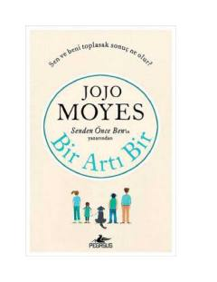

BAHayot sinovlarida bir-biriga suyanib qolgan ikki insonning ta'sirli hikoyasi.
Jojo Moyes qalamiga mansub ushbu asar ikki turlicha inson – qiyinchiliklarga qaramay taslim bo'lmaydigan yolg'iz ona Jess va hayoti ostin-ustun bo'lgan Edning kutilmagan uchrashuvi haqida hikoya qiladi. Kitob hayotiy sinovlar, umid va insoniy munosabatlarning murakkabliklarini o'quvchiga ta'sirli tarzda ochib beradi. Asar voqealari qahramonlarning taqdirlari tutashgan qiziqarli lahzalarga boy.